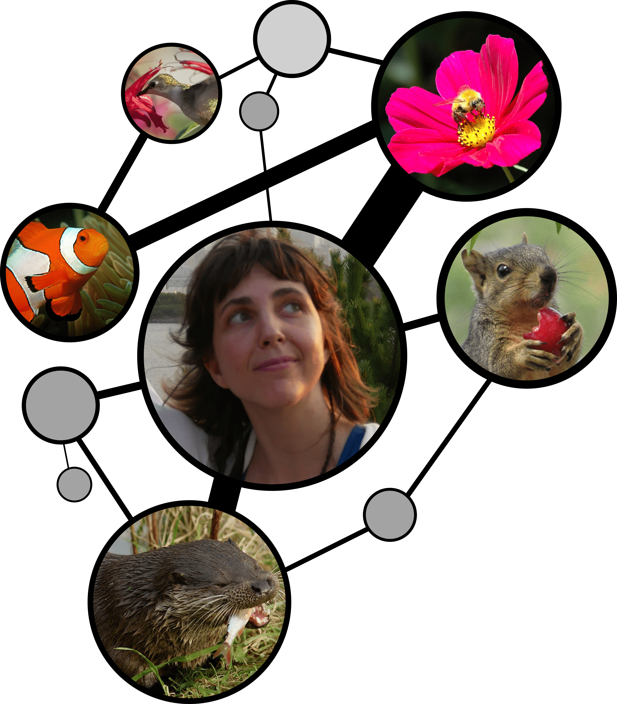

I study how ecological and biological networks are built, and why some hold together under change. My work sits between statistical physics and network ecology — structural stability, self-organization, and methods for measuring how interaction networks shift over time.
